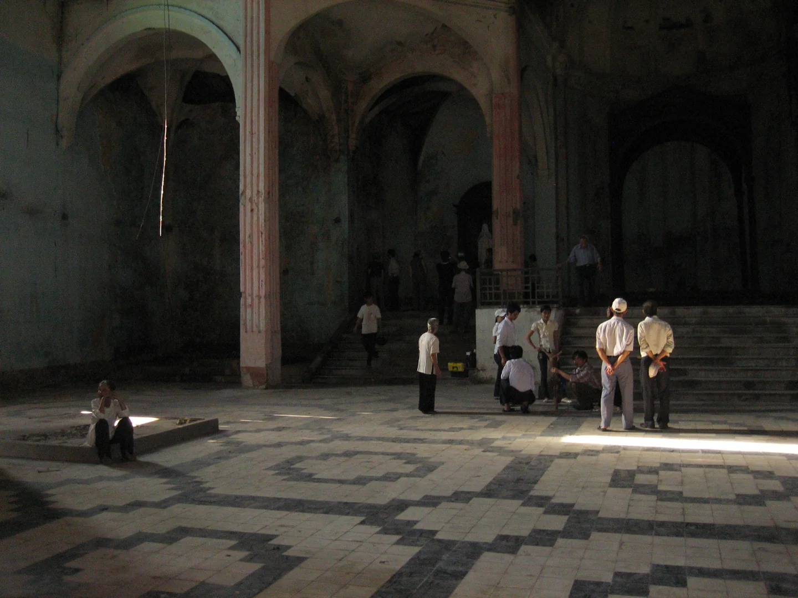
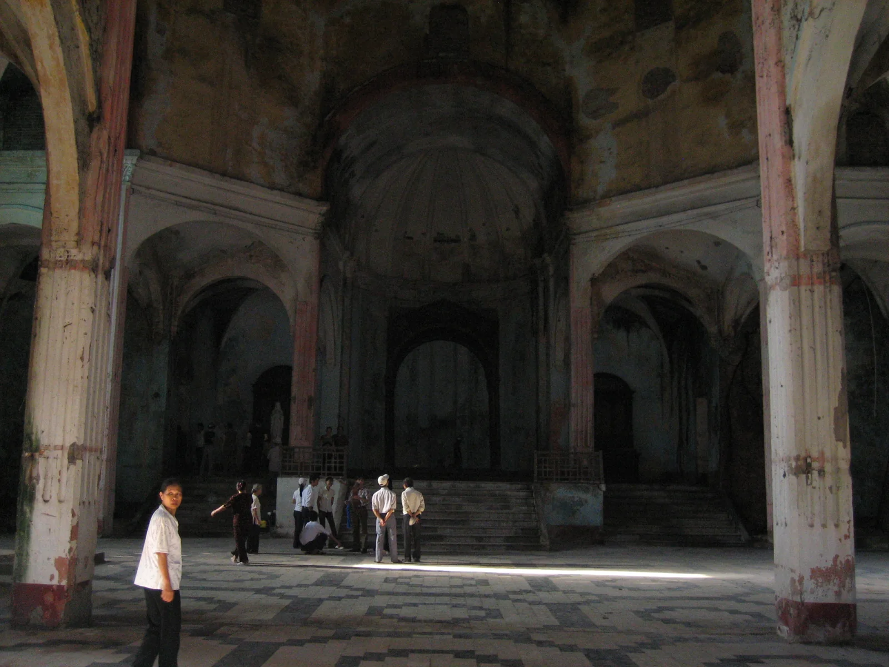
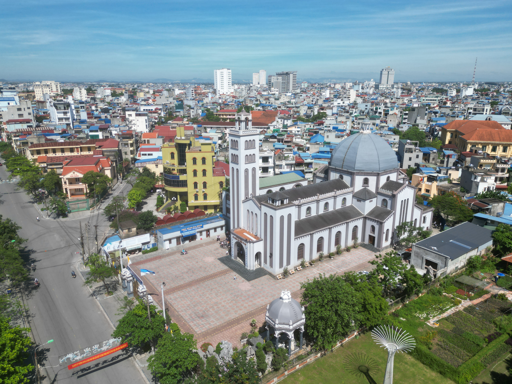
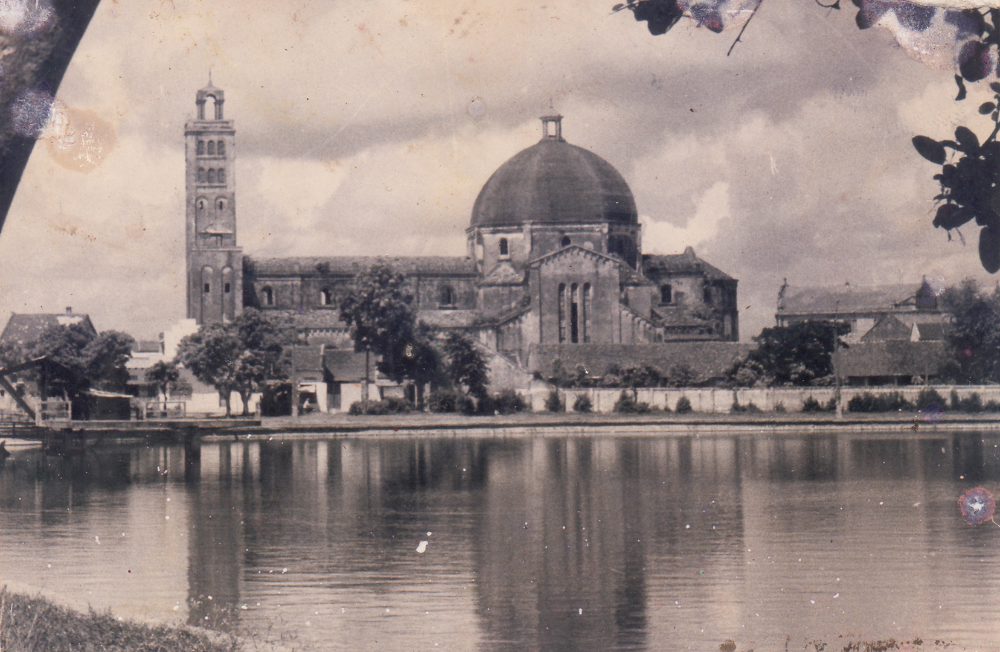
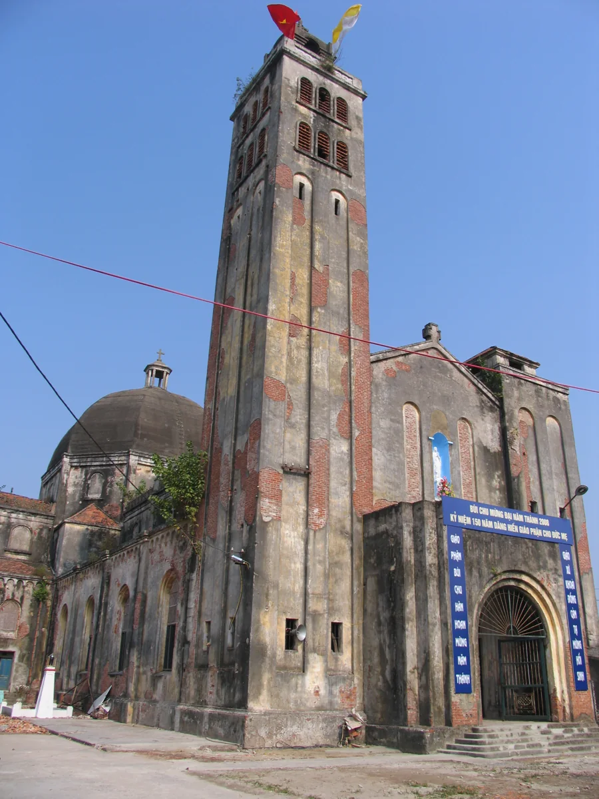
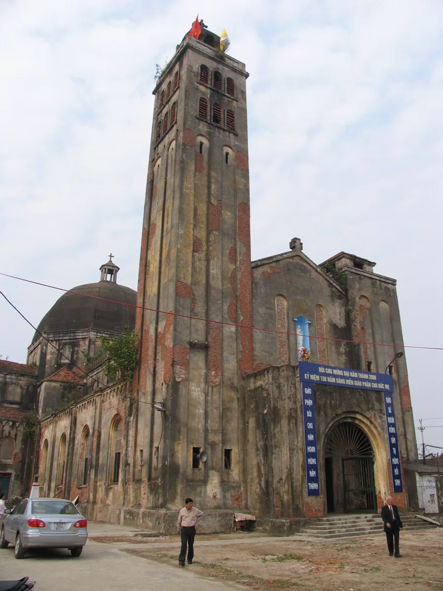
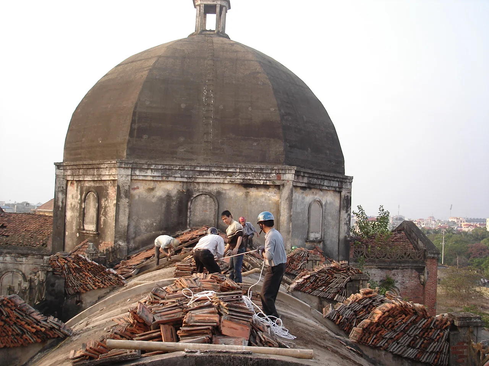
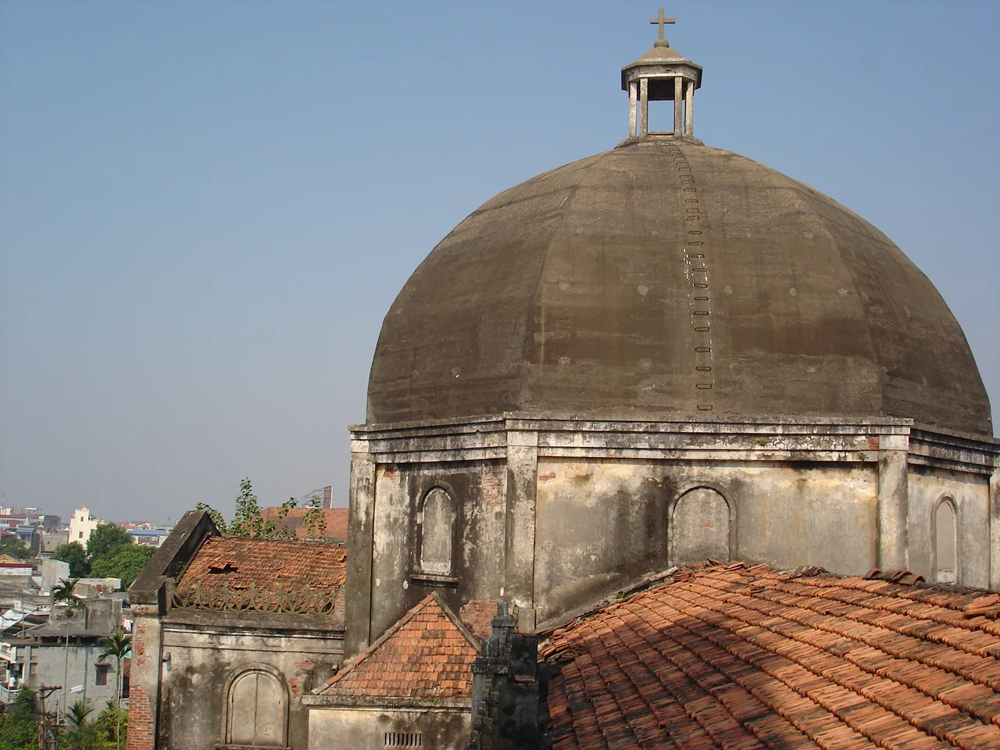
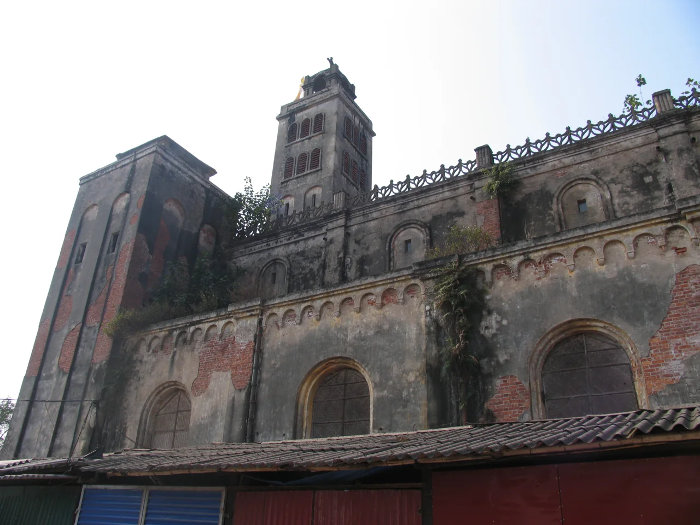
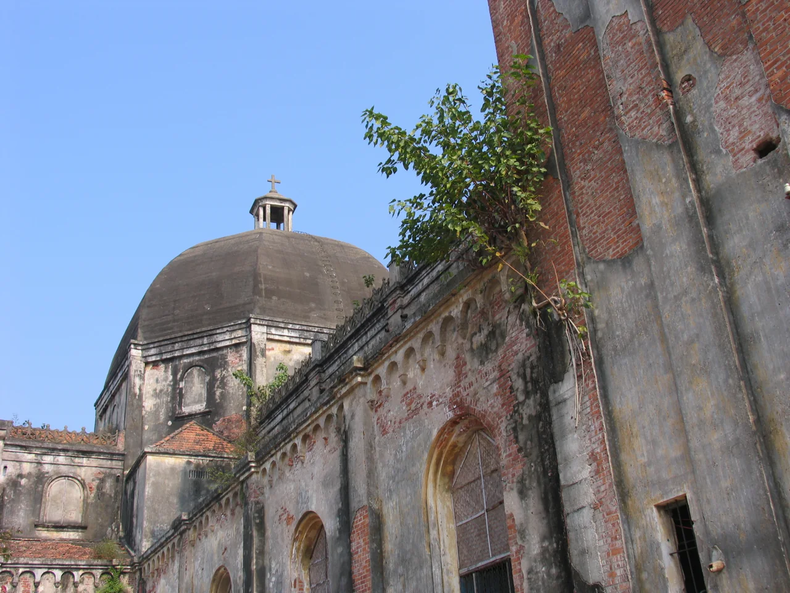

Ảnh B

Ảnh ALòng thánh đường
Những hàng cột, mái vòm và khoảng sáng thân quen
Giáo phận Bùi Chu
Giáo xứ Nữ Vương Các Thánh Tử Đạo

Khoái Đồng, theo tục truyền còn có tên gọi là Khói Đồng, là tên của một trong 5 thôn cổ của làng Vị Hoàng xưa. Giáo xứ Khoái Đồng tọa lạc tại số 127 Lê Hồng Phong, phường Nam Định, tỉnh Ninh Bình, ngay bên bờ hồ Vị Xuyên. Đây là Giáo xứ duy nhất thuộc Giáo phận Bùi Chu thuộc Tả ngạn (phía tây) sông Đào (sông Nam Định). Hiện nay tả ngạn sông Đào của tỉnh Nam Định (cũ) thuộc Tổng Giáo phận Hà Nội.
Khuôn viên Nhà thờ có diện tích tổng là 5.800 m2. Nhà thờ có hình thánh giá dài 65m rộng 16m, hai tay thánh giá mỗi bên rộng thêm 4 mét, một mái vòm tròn đường kính 16m, cao 35m. Trên tháp cao 37m có bộ chuông nhạc gồm 5 quả (trong thời loạn ly, các quả chuông được đưa xuống gửi nơi giáo xứ Tứ Trùng gìn giữ - hiện vẫn đang ở đây. Đến năm 2024, một gia đình đã dâng 4 quả chuông cho nhà xứ).

Các tín hữu của giáo xứ Khoái Đồng đón nhận Tin Mừng khi các thừa sai Dòng Tên đến giảng đạo. Được sự giúp đỡ của các vị thừa sai, giáo hữu cùng nhau góp công góp của làm nhà thờ. Giáo họ Khoái Đồng được thành lập khoảng năm 1700 và được các cha Dòng Tên phục vụ. Từ năm 1759, giáo họ Khoái Đồng được trao cho các cha Dòng Đa Minh coi sóc.
Sau thời cấm đạo, số giáo hữu ngày một đông, để có thể đáp ứng nhu cầu mục vụ, năm 1875, Đức cha Barnabas Cézon Khang nâng giáo họ Khoái Đồng lên hàng giáo xứ. Năm 1900, theo nghị quyết của Công Đồng Kẻ Sặt, giáo xứ Khoái Đồng được chọn làm trung tâm đào tạo nhân sự cho Giáo phận Đông Đàng ngoài (Giáo phận Dòng). công việc xây dựng và đào tạo được trao cho các cha Dòng Đa Minh phụ trách.
Từ thập niên 1920, khu vực nhà thờ Khoái Đồng bắt đầu được các cha Dòng Đa Minh Tây Ban Nha kiến thiết, quy hoạch và xây dựng. Quần thể này bao gồm: Nhà thờ Khoái Đồng, Giáo hoàng Chủng viện Thánh Albertô Cả (nay là trường tiểu học Phạm Hồng Thái, phân hiệu 4), Trường Sư phạm Thánh Tôma (nay là trường THPT Nguyễn Khuyến), và một số khu vực phụ trợ xung quanh. Quần thể này có tổng diện tích 56.085 m2.
Phần Nhà thờ Khoái Đồng, do cha Casado Thuận, O.P. phụ trách xây cất theo kiến trúc Romanesque, bắt đầu được khởi công xây dựng từ năm 1934. Năm 1936, Đức cha Muñagorri chúc lành cho viên đá đầu tiên khởi công xây dựng thánh đường.
Năm 1941, nhà thờ Khoái Đồng long trọng khánh thành với tước hiệu Nữ Vương Các Thánh Tử Đạo. Vào Giáng sinh năm 1941, một Thánh Lễ Misa được cử hành long trọng lần đầu tiên tại đây. Nhà thờ dâng kính Nữ Vương Các Thánh Tử Đạo là vì Thánh đường này được xây dựng trên bờ sông Vị Hoàng, nơi hàng vạn anh hùng ẩn danh đã hy sinh tính mạng vì Đức Tin và vì Giáo Hội Việt Nam.
Biến cố 1954 xảy ra chia đôi đất nước, các cha Đa Minh Tây Ban Nha bị trục xuất, đa số giáo dân của xứ Khoái Đồng di cư, các cha Đa Minh người Việt cùng đi theo giáo dân vào Nam. Nhà thờ Khoái Đồng không có linh mục phụ trách từ năm 1956-1959. Tuy nhiên, trong thời gian này thể theo thỉnh cầu của Toà Giám mục Bùi Chu, cha Đinh Lưu Nhân, từ nhà thờ lớn Nam Định (TGP. Hà Nội), đã sang giúp mục vụ.
Năm 1959, MTTQ Nam Định đưa linh mục Lâm Quang Học từ xứ Giáo Lạc (Nghĩa Hưng) về cư ngụ tại nhà thờ Khoái Đồng. Sau khi cha Học qua đời năm 1963, Nhà thờ bị chiếm dụng cho những mục đích sản xuất, giải trí, v.v.. một số gia đình đến tạm cư và dựng nhà trong khuôn viên Nhà thờ.

Năm 2008, chính quyền thành phố Nam Định, thực hiện chỉ đạo của Thủ tướng Chính phủ, tiến hành việc trao trả lại Nhà thờ Khoái Đồng và các phần đất thuộc Nhà thờ cho Giáo phận Bùi Chu. Việc trao trả chia làm 3 đợt và đến nay vẫn chưa hoàn tất. Sau khi đã giải toả được một phần đất của Nhà thờ bị lấn chiếm, chính quyền tiến hành trao trả: đợt I ngày 07.11.2008, đợt II tháng 6.2010. Cả hai đợt trao trả này, chính quyền giữ lại phần lớn đất giải toả để đưa vào quy hoạch mở rộng đường xá và công viên, nên diện tích giao lại cho Nhà thờ Khoái Đồng giảm đi đáng kể. Đợt III vẫn đang tiếp tục tiến hành: hiện tại vẫn còn 7 hộ dân cư ngụ trên lãnh thổ Nhà thờ, vẫn đang chờ di dời.

Sau 6 năm trùng tu, ngày 27.12.2014, Thánh lễ khánh thành và cung hiến nhà thờ được long trọng cử hành.
Thống kê năm 2026
Phụng sự trong yêu thương
Đang theo học
Giáo lý Hồng Ân
Theo học Giáo lý Dự tòng - Hôn nhân
Vuốt ngang hoặc dùng phím mũi tên để xem các tu sĩ

Chính xứ, từ 2024

Phó xứ

Đặc Trách Huynh đoàn Đa Minh Giáo phận


Các cặp ảnh tư liệu dưới đây dùng làm mẫu; niên đại từng ảnh chưa được xác minh.

Ảnh ANhững hàng cột, mái vòm và khoảng sáng thân quen

Ảnh B
Ảnh AMặt tiền thánh đường trong hai khung hình

Ảnh B
Ảnh ADấu vết thời gian trên từng viên ngói

Ảnh B
Ảnh ANhững ô cửa lưu giữ ký ức về ngôi nhà chung.
Chạm hoặc kéo ngang trên ảnh